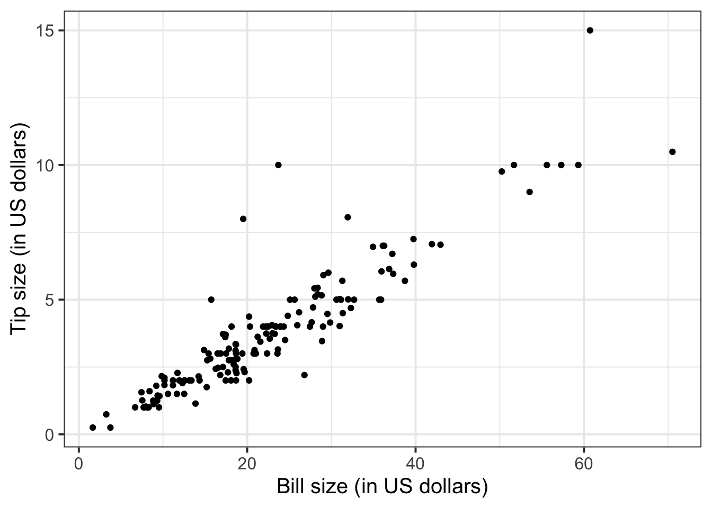
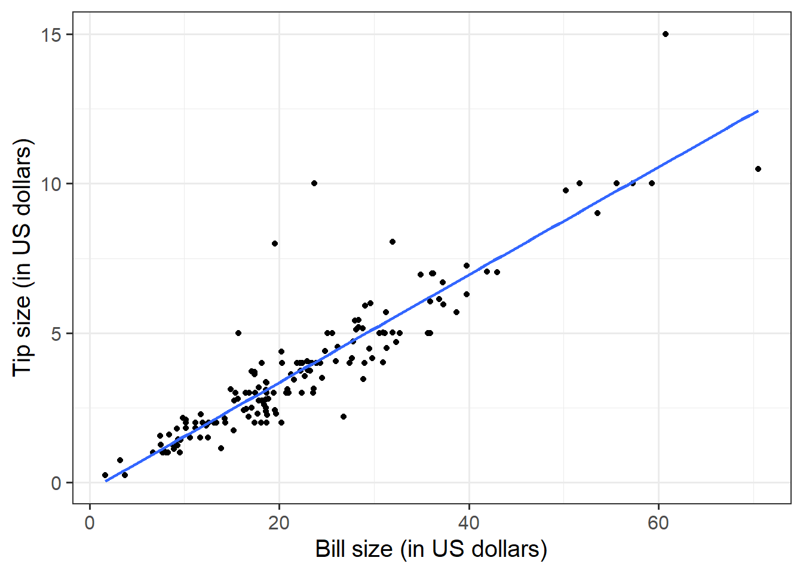
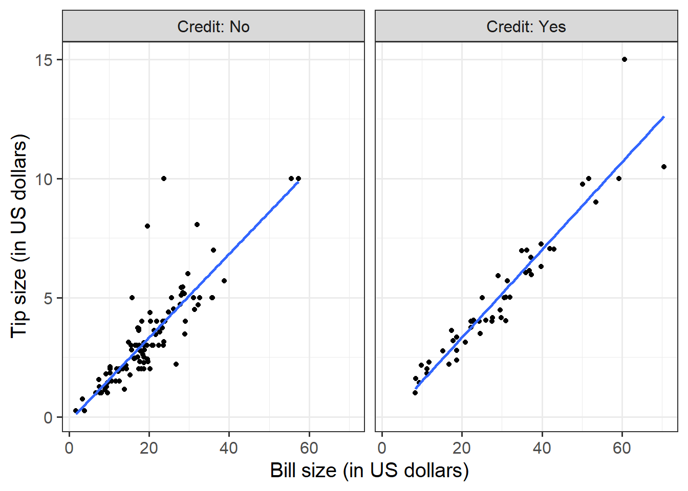
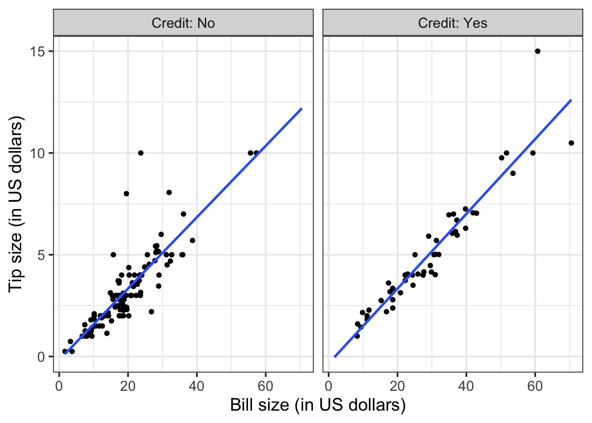

Formative report A
Semester 1 - Week 5
This week: Submission of Formative report A
Your group must submit one PDF file for formative report A by 12 noon on Friday 21 October 2022.
-
To submit go to the course Learn page, click “Assessment” from the left-hand side menu, then click “Report submission”, and then “Submit Formative Report A here (PDF file only)”.
- Only one person per group is required to submit on behalf of the entire group. However, to ensure that everyone in the group can see the feedback, please double check that you self-registered in the group on Learn (see group name on the desk).
As mentioned on the Course Information page, there will be no extensions allowed for group-based reports.
You will receive formative feedback on your submission during the labs of week 6. Please attend your lab next week!
The submitted report should be a PDF file of 4 pages at most.
You can add an Appendix in which you will collate all the R code in a chunk with the settings
results = 'hide', fig.show = 'hide'. This will not count towards the page limit.Excluding the Appendix, the report should not include any reference to R code or functions, but be written for a generic reader who is only assumed to have a basic statistical understanding without any R knowledge.
Data
For formative report A, please only focus on the variables Movie to Year, ignoring anything beyond that. In other words, do not analyse the variables IQ1 to PrivateTransport in the next five weeks of the course, we will use those later in the course.
Hollywood Movies. At the link https://uoepsy.github.io/data/hollywood_movies_subset.csv you will find data on Hollywood movies released between 2012 and 2018 from the top 5 lead studios and top 10 genres. The following variables were recorded:
-
Movie: Title of the movie -
LeadStudio: Primary U.S. distributor of the movie -
RottenTomatoes: Rotten Tomatoes rating (critics) -
AudienceScore: Audience rating (via Rotten Tomatoes) -
Genre: One of Action Adventure, Black Comedy, Comedy, Concert, Documentary, Drama, Horror, Musical, Romantic Comedy, Thriller, or Western -
TheatersOpenWeek: Number of screens for opening weekend -
OpeningWeekend: Opening weekend gross (in millions) -
BOAvgOpenWeekend: Average box office income per theater, opening weekend -
Budget: Production budget (in millions) -
DomesticGross: Gross income for domestic (U.S.) viewers (in millions) -
WorldGross: Gross income for all viewers (in millions) -
ForeignGross: Gross income for foreign viewers (in millions) -
Profitability: WorldGross as a percentage of Budget -
OpenProfit: Percentage of budget recovered on opening weekend -
Year: Year the movie was released - (Ignore for now)
IQ1-IQ50: IQ score of each of 50 audience raters - (Ignore for now)
Snacks: How many of the 50 audience raters brought snacks - (Ignore for now)
PrivateTransport: How many of the 50 audience raters reached the cinema via private transportation
1 Tasks
For formative report A, you will be asked to perform the following tasks, each related to a week of teaching in this course.
This week you will only focus on task A5. In the next section you will find some guided sub-steps you may want to consider to complete task A5.
A1) Read the data into R, inspect it, and write a concise introduction to the data and its structure
A2) Display and describe the categorical variables
A3) Display and describe six numerical variables of your choice
A4) Display and describe a relationship of interest between two or three variables of your choice
This week’s task
A5) Finish the report write-up, knit to PDF, and submit the PDF for formative feedback
2 A5 sub-tasks
In this section you will find some guided sub-steps you may want to consider to complete task A5.
Reopen last week’s Rmd file, as you will continue last week’s work and build on it.1
Organise the Rmd file to have the following structure:
---
title: "Formative report A"
author: "Group ?.?"
date: "Write the date here"
output: bookdown::pdf_document2
---This is the metadata block. It includes the:
- document title
- author name
- date (to leave empty, use an empty string
"") - the output type
The output type could be html_document, pdf_document, etc.
We use bookdown::pdf_document2 so that we can reference figures, which pdf_document doesn’t let you do.
The code bookdown::pdf_document2 simply means to use the pdf_document2 type from the bookdown package.
```{r setup, include=FALSE}
knitr::opts_chunk$set(echo=FALSE, message=FALSE, warning=FALSE)
```This is the setup chunk and should always be included in your Rmd document. It sets the global options for all code chunks that will follow.
- If
echo=TRUE, the R code in chunks is displayed. If FALSE, not. - If
message=TRUE, information messages are displayed. If FALSE, not. - If
warning=TRUE, warning messages are printed. If FALSE, not.
If you want to change the setting in a specific code chunk, you can do so via:
```{r, echo=FALSE}
# A code chunk
``````{r, include=FALSE}
# week 1 code below
library(tidyverse)
# week 2 code below
pltEye <- ggplot(starwars, aes(x = eye_color)) +
geom_bar()
# week 3 code below
# week 4 code below
```This code chunks contains your rough work from each week. Give names to plots and tables, so that you can reference those later on. The option include=FALSE hides both code and output.
To run each line of code while you are working, put your cursor on the line and press Control + Enter on Windows or Command + Enter on a macOS.
## Introduction
Write here an introduction to the data, the variables, and anything worth of notice in the data.
## Analysis
Present here your tables, plots, and results. In the code chunk below, you do
not need to put the chunk option `echo=FALSE` as you set this option globally
in the setup chunk.
```{r}
pltEye
```
If you didn't set it globally, you would need to put it in the chunk options:
```{r, echo=FALSE}
pltEye
```
More text...
## Discussion
Write up your take home messages here...This contains your actual textual reporting, as well as tables and figures. To show in place a plot previously created, just include the plot name in a code chunk with the option echo = FALSE to hide the code but display the output.
## Appendix
```{r, echo=TRUE, results='hide', fig.show='hide'}
# copy and paste here all your R code
# week 1 code below
library(tidyverse)
# week 2 code below
pltEye <- ggplot(starwars, aes(x = eye_color)) +
geom_bar()
# week 3 code below
# week 4 code below
```This allows the marker to see the code you used to obtain your results. Please note that only the code should be visible in the appendix, no output.
The chunk options echo=TRUE, results='hide', fig.show='hide' ensure that the appendix code is visible (echo=TRUE), the output is hidden (results=‘hide’), and figures are hidden (fig.show=‘hide’).
The appendix does not count towards the 4-page limit.
Knit the document to PDF
-
Submit the PDF file on Learn:
- Go to the Learn page of the course
- Click Assessments on the left-hand side menu
- Click Report submission
- Click Formative Report A
- Follow the instructions
Referencing figures
First, you need to pick a unique label for the code chunk that displays the figure, in this case short-label but you should use a more descriptive name.
```{r short-label, fig.cap = "Figure caption"}
pltEye <- ggplot(starwars, aes(x = eye_color)) +
geom_bar() +
theme(axis.text.x = element_text(angle = 45, hjust = 1))
pltEye
```To reference a figure, for example the one above, you would
write see Figure \@ref(fig:short-label).which, when you Knit to PDF, becomes:
To reference a figure, for example the one above, you would write see Figure 1.
Referencing tables
First, you need to pick a unique label for the code chunk that displays the table, in this case tbl-short-label but you should use a more descriptive name.
```{r tbl-short-label, echo=FALSE}
library(kableExtra)
tblEye <- starwars %>%
count(eye_color) %>%
kbl(booktabs = TRUE, caption = "Short table caption")
tblEye
```| eye_color | n |
|---|---|
| black | 10 |
| blue | 19 |
| blue-gray | 1 |
| brown | 21 |
| dark | 1 |
| gold | 1 |
| green, yellow | 1 |
| hazel | 3 |
| orange | 8 |
| pink | 1 |
| red | 5 |
| red, blue | 1 |
| unknown | 3 |
| white | 1 |
| yellow | 11 |
The table is referenced as, see Table \@ref(tab:tbl-short-label).Which, when you knit to PDF, is displayed as:
The table is referenced as, see Table 1.
For details on styling PDF tables, see this link.
Reducing figure size
You could place multiple panels into a single figure using the functions | and / from the patchwork package.
You could adjust the figure height and width by playing with a few options for the numbers fig.height = ? and fig.width = ?, for example 5 and 4, or 12 and 8, and so on. Please note this is typically found by trial and error. Keep in mind, however, that the figure labels should still be legible in the plot you show.
```{r, fig.height = 5, fig.width = 4}
# your code to display the figure here
```
Hiding R code or ouput
To not show the code of an R code chunk, and only show the output, write:
```{r, echo=FALSE}
# code goes here
```To show the code of an R code chunk, but hide the output, write:
```{r, results='hide'}
# code goes here
```To hide both text output and figures, use:
```{r, results='hide', fig.show='hide'}
# code goes here
```To hide both code and output of an R code chunk, write:
```{r, include=FALSE}
# code goes here
```3 Worked example
Consider the dataset available at https://uoepsy.github.io/data/RestaurantTips.csv, containing 157 observations on the following 7 variables:
| Variable Name | Description |
|---|---|
| Bill | Size of the bill (in dollars) |
| Tip | Size of the tip (in dollars) |
| Credit | Paid with a credit card? n or y |
| Guests | Number of people in the group |
| Day | Day of the week: m=Monday, t=Tuesday, w=Wednesday, th=Thursday, or f=Friday |
| Server | Code for specific waiter/waitress: A, B, or C |
| PctTip | Tip as a percentage of the bill |
These data were collected by the owner of a bistro in the US, who was interested in understanding the tipping patterns of their customers. The data are adapted from Lock et al. (2020).
# A tibble: 6 × 7
Bill Tip Credit Guests Day Server PctTip
<dbl> <dbl> <chr> <dbl> <chr> <chr> <dbl>
1 23.7 10 n 2 f A 42.2
2 36.1 7 n 3 f B 19.4
3 32.0 5.01 y 2 f A 15.7
4 17.4 3.61 y 2 f B 20.8
5 15.4 3 n 2 f B 19.5
6 18.6 2.5 n 2 f A 13.4We can replace each factor level with a clearer label:
The percentage of total bill has a maximum value of 221, which seems very strange. Someone is very unlikely to tip more than their bill total. In this case 221% of their bill value seems unlikely.
Let’s inspect the row where PctTip is greater than 100:
# A tibble: 1 × 7
Bill Tip Credit Guests Day Server PctTip
<dbl> <dbl> <fct> <dbl> <fct> <fct> <dbl>
1 49.6 NA Yes 4 Thursday C 221With a bill of 49.59, the tip would be 109.59 dollars:
49.59 * 221 / 100[1] 109.5939Furthermore, we also notice that the tipping amount is not available (NA). The corresponding value in the percentage of total tip seems likely an inputting error, perhaps due to double typing the leading 2 when recording the data. We will set that value to not available (NA) with the following code:
tips$PctTip[tips$PctTip > 100] <- NAConsider, for example, the relationship between bill and tip size. As these are two numerical variables, we visualise the relationship with a scatterplot:
ggplot(tips, aes(x = Bill, y = Tip)) +
geom_point() +
labs(x = "Bill size (in US dollars)",
y = "Tip size (in US dollars)")
We can numerically summarise this relationship with the covariance between the two variables:
The relationship looks roughly like a line. You can superimpose a “best-fit” line with the function geom_smooth(method = lm, se = FALSE). The argument method = lm tells to fit a line (in R this is called a linar model, lm), and se = FALSE tells R to not plot the uncertainty bands.
ggplot(tips, aes(x = Bill, y = Tip)) +
geom_point() +
labs(x = "Bill size (in US dollars)",
y = "Tip size (in US dollars)") +
geom_smooth(method = lm, se = FALSE)
You will only learn how to find the functional relationship between two variables in the second-year course DAPR2, so for now I will give it to you:
\[ y = -0.26 + 0.18 * x \qquad \text{where} \qquad \begin{cases} x = \text{Bill} \\ y = \text{Tip} \end{cases} \]
What is the predicted tip for a bill of 50 US dollars? Let’s do the computation:
-0.26 + 0.18 * 50[1] 8.74From the plot above, a tip of 8.74 US dollars seems roughly right!
Let’s find the tips for bills of size 20, 40, 60.
# A tibble: 3 × 2
bills tips
<dbl> <dbl>
1 20 3.34
2 40 6.94
3 60 10.5 To investigate the relationship between bill and tip size for those who paid by credit card and those who didn’t we can create faceted scatterplots:
ggplot(tips, aes(x = Bill, y = Tip)) +
geom_point() +
labs(x = "Bill size (in US dollars)",
y = "Tip size (in US dollars)") +
facet_wrap(~Credit, labeller = "label_both")
You can also fit a best-fit line by payment method:
ggplot(tips, aes(x = Bill, y = Tip)) +
geom_point() +
labs(x = "Bill size (in US dollars)",
y = "Tip size (in US dollars)") +
facet_wrap(~Credit, labeller = "label_both") +
geom_smooth(method = lm, se = FALSE)
To extend the lins for the full range of the x-axis, you can use the option fullrange = TRUE:
ggplot(tips, aes(x = Bill, y = Tip)) +
geom_point() +
labs(x = "Bill size (in US dollars)",
y = "Tip size (in US dollars)") +
facet_wrap(~Credit, labeller = "label_both") +
geom_smooth(method = lm, se = FALSE, fullrange = TRUE)
Again, you will not know how to find out the functional relationship between the variables within each group until the course DAPR2 in 2nd year, so I will give it to you.
For those who did not pay by credit card:
\[ y = -0.17 + 0.18 * x \qquad \text{where} \qquad \begin{cases} x = \text{Bill} \\ y = \text{Tip} \end{cases} \]
For those who paid by credit card:
\[ y = -0.34 + 0.18 * x \qquad \text{where} \qquad \begin{cases} x = \text{Bill} \\ y = \text{Tip} \end{cases} \]
4 Student Glossary
To conclude the lab, add the new functions to the glossary of R functions that you started last week.
| Function | Use and package |
|---|---|
geom_smooth |
? |
tibble |
? |
knitr::opts_chunk$set() |
? |
References
Lock, Robin H, Patti Frazer Lock, Kari Lock Morgan, Eric F Lock, and Dennis F Lock. 2020. Statistics: Unlocking the Power of Data. John Wiley & Sons.
Footnotes
Hint: ask last week’s driver for the Rmd file, they should share it with the group via email or Teams.
To download the file from the server, go to the RStudio Files pane, tick the box next to the Rmd file, and select More > Export.↩︎